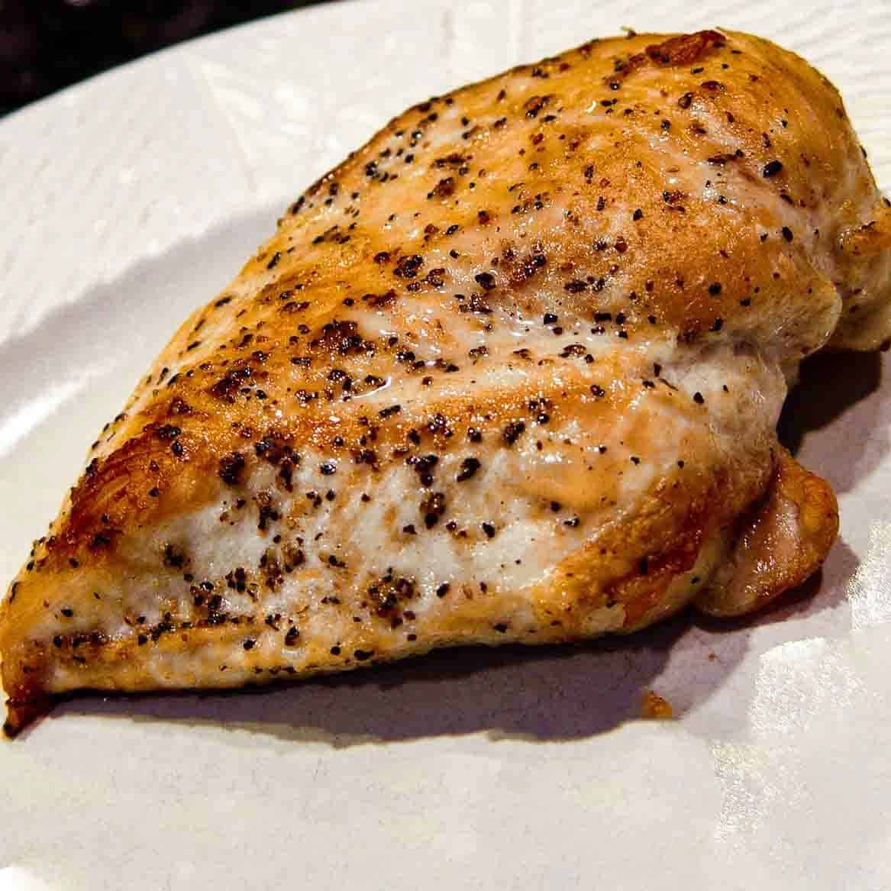

Pan Seared Chicken Breast

A tender chicken breast, with an unbelivable crispy exterior
Low calorie and easy to make high-protein meal!
Ingredients & Equipment
- raw chicken breast
- salt
- black pepper
- olive oil
- stainless steel or cast iron pan
- tongs
- paper towels
- meat thermonador
instructions
- Take chicken breast out of fridge and let come up to room temp on the counter for 20min.
- Pat chicken dry with paper towels and then add salt and pepper.
- Preheat a pan to medium high heat and add olive oil.
- Using your tongs lay the chicken breast on the pan away from yourself.
- Flip your chicken breast every minute or so, continue till the inside of your chicken registers 155F on your meat thermometer.
- Let your chicken rest for 10-15min before eating, enjoy!.